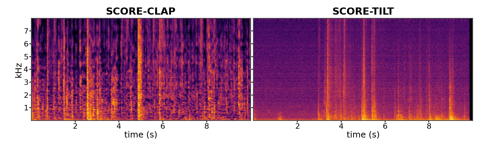
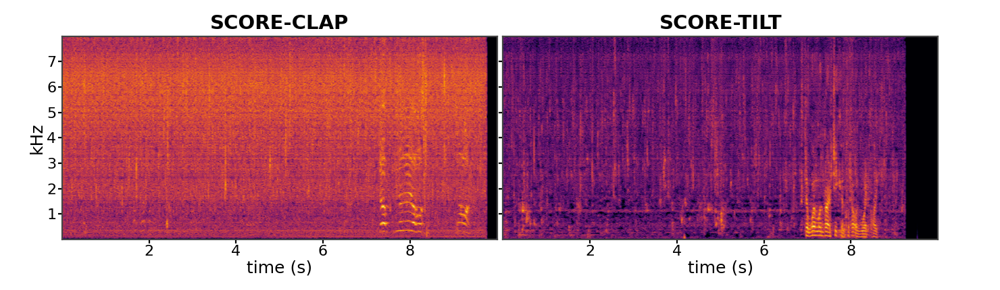
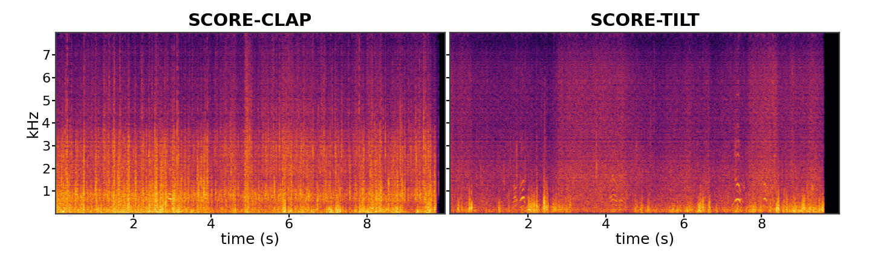
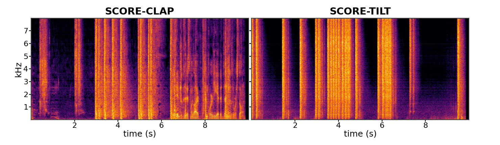
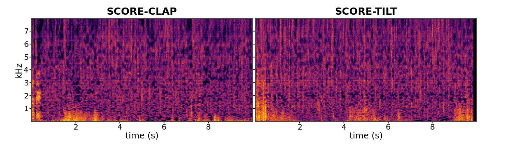
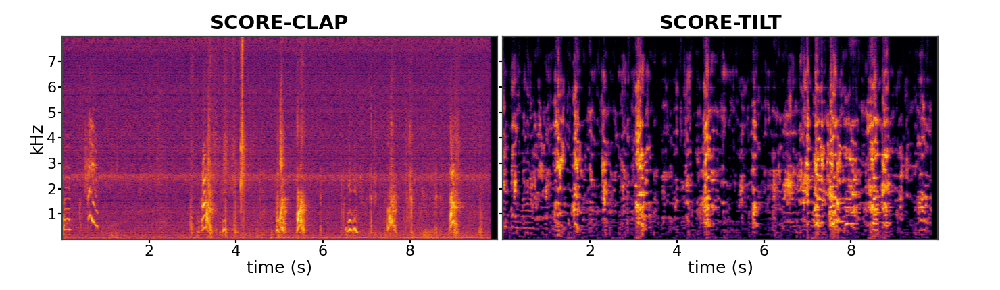

Main Question
How should intermediate generation be steered so that the denoised samples at t=0 are drawn from the pure modes?
Diffusion models often struggle with compositional prompts, producing samples in which some concepts dominate while others are missing or weakly represented. TILT is a training-free framework that poses eventual pure-mode sampling as a reward for intermediate-time alignment. The reward is intrinsic to the model, yields a tractable target under a variational approximation, and can be applied across modalities. Experiments on vision and audio benchmarks show improved compositional alignment while preserving sample quality compared with prior baselines.
How should intermediate generation be steered so that the denoised samples at t=0 are drawn from the pure modes?
A pure mode is a region of the final clean-sample distribution that represents the full composition. Its samples express the requested concepts together, without one dominating or disappearing.
TILT rewards intermediate states that lead to pure modes at the final sample. The reward comes from the diffusion model itself, contrasting joint and constituent conditions without an external reward model.
Qualitative comparisons across compositional prompts.
Prompt: A bus and a bicycle in a compositional scene.


Prompt: A compositional prompt with multiple visual concepts.


Prompt: A compositional prompt with multiple objects and attributes.


Prompt: A compositional scene with interacting objects.


Prompt: A colored-object composition from GenEval.


Prompt: A spatial/object composition from GenEval.


Prompt: A spatial composition from GenEval.


Prompt: A multi-object composition from GenEval.


Listen to SCORE-CLAP and SCORE-TILT for the same prompt.






Compositional diffusion models can drift toward regions where a joint prompt behaves too similarly to one constituent concept, causing concept dominance or omission. Prior correctors suppress these collisions locally at intermediate noise levels.
TILT instead defines the desired outcome in data space: a final clean sample should lie in a pure joint mode. The resulting reward is intrinsic to the pretrained model, contrasting joint-condition likelihood against constituent-condition likelihoods.


The reward is computed from the diffusion model itself rather than an external vision-language or preference model. Under the paper's variational approximation, it becomes a contrast between the model's joint and single-concept denoising behavior.
This makes the same principle usable without training a modality-specific reward model.